| 's-Gravenhage at 984, -2.6% change | | Lopik at 452, 2.6% change |  |
| 's-Hertogenbosch at 71, -63.9% change | | Losser at 255, -37.8% change | |
| Aa en Hunze at 99, -27.0% change | 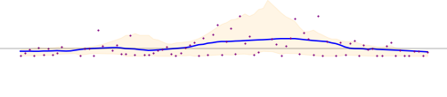 | Maasdriel at 135, 0.0% change |  |
| Aalsmeer at 0, -99.4% change |  | Maasgouw at 169, 5.8% change |  |
| Aalten at 834, -33.5% change |  | Maassluis at 78, -49.6% change | |
| Achtkarspelen at 42, -61.1% change | 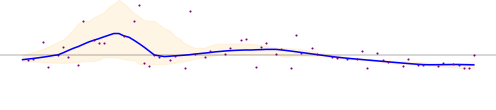 | Maastricht at 340, -21.9% change | 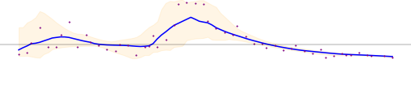 |
| Alblasserdam at 234, -25.4% change | | Medemblik at 79, -2.9% change |  |
| Albrandswaard at 186, -35.8% change |  | Meerssen at 204, 27.9% change |  |
| Alkmaar at 267, -21.0% change |  | Meierijstad at 19, -63.7% change | 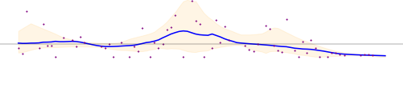 |
| Almelo at 573, -16.8% change |  | Meppel at 125, 34.8% change |  |
| Almere at 802, -34.3% change | 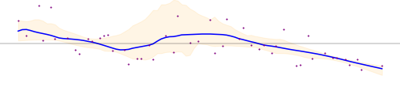 | Middelburg at 332, 2.0% change |  |
| Alphen aan den Rijn at 47, -67.2% change | | Midden-Delfland at 14, -35.9% change |  |
| Alphen-Chaam at 178, -6.2% change |  | Midden-Drenthe at 169, -44.1% change |  |
| Altena at 283, -41.2% change | | Midden-Groningen at 142, -49.6% change | 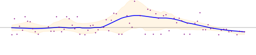 |
| Ameland at 2969, -24.6% change |  | Moerdijk at 0, -100.0% change |  |
| Amersfoort at 160, -46.7% change | 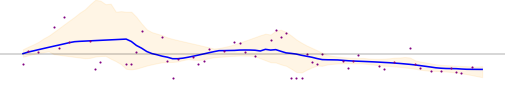 | Molenlanden at 133, -25.6% change | 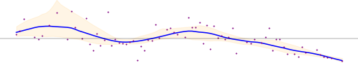 |
| Amstelveen at 400, 121.9% change |  | Montferland at 84, -27.6% change |  |
| Amsterdam at 1065, -10.7% change | 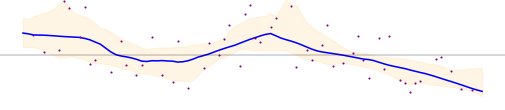 | Montfoort at 231, -64.8% change | |
| Apeldoorn at 232, 11.4% change | 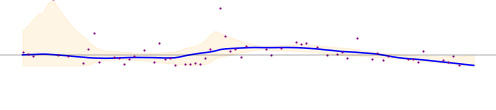 | Mook en Middelaar at 81, -52.3% change | |
| Arnhem at 0, -100.0% change | | Neder-Betuwe at 43, -62.6% change | |
| Assen at 12, -96.7% change |  | Nederweert at 1, -95.5% change | |
| Asten at 76, -50.5% change | | Nieuwegein at 116, -59.2% change |  |
| Baarle-Nassau at 175, -66.8% change |  | Nieuwkoop at 232, -23.2% change | |
| Baarn at 104, -66.2% change |  | Nijkerk at 186, -45.1% change |  |
| Barendrecht at 129, -36.0% change | | Nijmegen at 384, 16.8% change |  |
| Barneveld at 78, -36.0% change | 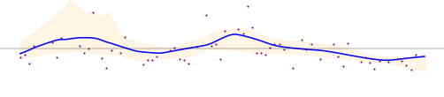 | Nissewaard at 419, -40.3% change |  |
| Beek at 11, -60.7% change |  | Noardeast-Fryslân at 61, -53.7% change | 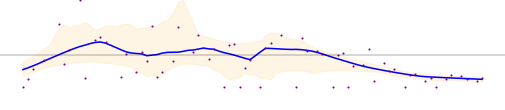 |
| Beekdaelen at 26, -50.0% change | 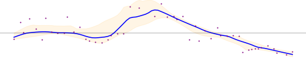 | Noord-Beveland at 2283, -11.7% change | 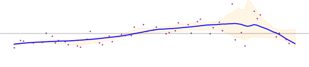 |
| Beesel at 7, -65.9% change |  | Noordenveld at 95, 1.2% change | 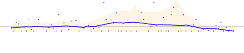 |
| Berg en Dal at 296, -37.4% change | | Noordoostpolder at 78, -63.8% change | |
| Bergeijk at 10, -45.1% change | | Noordwijk at 17, -92.5% change |  |
| Bergen (L.) at 74, -8.0% change |  | Nuenen, Gerwen en Nederwetten at 6, -48.8% change |  |
| Bergen (NH.) at 165, -13.4% change |  | Nunspeet at 131, -39.9% change |  |
| Bergen op Zoom at 9, -93.3% change |  | Oegstgeest at 117, 3.6% change |  |
| Berkelland at 188, -34.3% change |  | Oirschot at 39, -59.3% change | 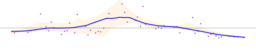 |
| Bernheze at 58, -7.3% change |  | Oisterwijk at 249, 43.7% change | 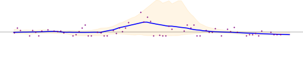 |
| Best at 60, -77.8% change | 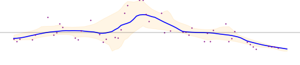 | Oldambt at 147, -73.6% change | |
| Beuningen at 38, -13.8% change |  | Oldebroek at 236, -51.0% change |  |
| Beverwijk at 124, -7.4% change | 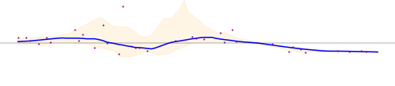 | Oldenzaal at 753, 0.0% change | |
| Bladel at 226, -56.7% change | | Olst-Wijhe at 325, 23.3% change |  |
| Blaricum at 272, -36.1% change |  | Ommen at 84, -47.2% change |  |
| Bloemendaal at 26, -47.3% change |  | Oost Gelre at 98, -60.8% change | |
| Bodegraven-Reeuwijk at 385, 22.1% change | 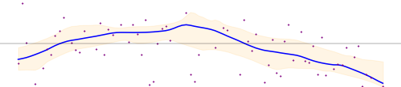 | Oosterhout at 155, 81.9% change |  |
| Boekel at 6, -66.4% change | 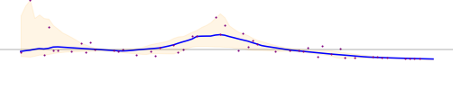 | Ooststellingwerf at 184, -6.8% change |  |
| Borger-Odoorn at 232, -44.9% change | | Oostzaan at 2, -93.6% change |  |
| Borne at 156, -19.6% change |  | Opmeer at 50, -39.0% change |  |
| Borsele at 130, -32.5% change |  | Opsterland at 38, -33.7% change | |
| Boxtel at 93, -19.2% change | | Oss at 117, -57.2% change | 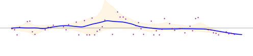 |
| Breda at 154, -34.8% change | | Oude IJsselstreek at 100, -60.0% change | 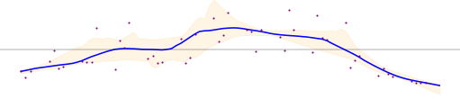 |
| Brielle at 137, -29.3% change |  | Ouder-Amstel at 43, 56.9% change |  |
| Bronckhorst at 63, -16.7% change |  | Oudewater at 369, -30.5% change | 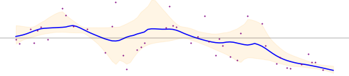 |
| Brummen at 0, -100.0% change | 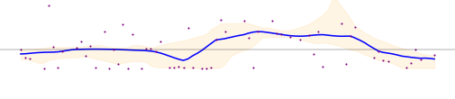 | Overbetuwe at 71, -61.1% change |  |
| Brunssum at 1, -99.1% change | | Papendrecht at 528, -32.6% change | 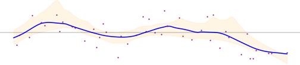 |
| Bunnik at 47, -84.3% change | | Peel en Maas at 223, -16.5% change | |
| Bunschoten at 45, -48.1% change |  | Pekela at 278, -45.6% change | 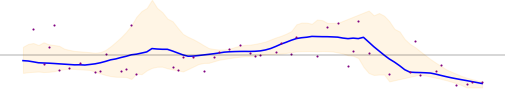 |
| Buren at 105, -23.5% change |  | Pijnacker-Nootdorp at 28, -54.7% change |  |
| Capelle aan den IJssel at 122, -65.6% change |  | Purmerend at 306, -21.6% change |  |
| Castricum at 249, -1.4% change |  | Putten at 0, -100.0% change | |
| Coevorden at 187, -34.2% change |  | Raalte at 4, -97.9% change |  |
| Cranendonck at 202, -47.1% change | 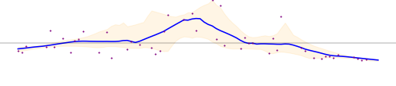 | Reimerswaal at 0, -100.0% change |  |
| Culemborg at 207, -71.1% change |  | Renkum at 161, -59.9% change | |
| Dalfsen at 503, 66.4% change |  | Renswoude at 24, -47.6% change | 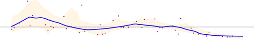 |
| Dantumadiel at 0, -100.0% change |  | Reusel-De Mierden at 146, -56.3% change | 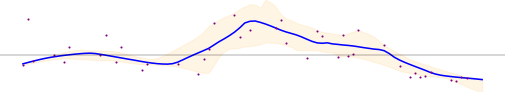 |
| De Bilt at 267, -20.9% change | | Rheden at 112, -22.1% change | |
| De Fryske Marren at 47, -74.9% change | | Rhenen at 196, -37.6% change | 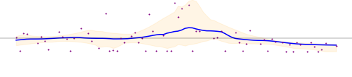 |
| De Ronde Venen at 193, -38.0% change | 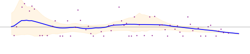 | Ridderkerk at 0, -100.0% change | 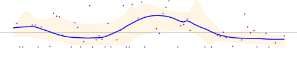 |
| De Wolden at 3, -96.2% change |  | Rijssen-Holten at 162, -45.8% change |  |
| Delft at 52, -54.9% change | | Rijswijk at 28, -54.7% change | |
| Den Helder at 611, -11.1% change |  | Roerdalen at 68, 20.2% change |  |
| Deurne at 20, -57.8% change |  | Roermond at 389, 11.8% change |  |
| Deventer at 156, -38.7% change |  | Roosendaal at 0, -100.0% change | |
| Diemen at 20, -32.4% change | 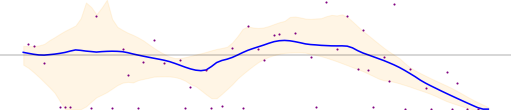 | Rotterdam at 464, -22.0% change | |
| Dinkelland at 36, -85.8% change | 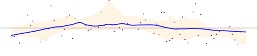 | Rozendaal at 4, -32.1% change | |
| Doesburg at 64, -34.7% change | | Rucphen at 2, -85.1% change | 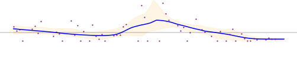 |
| Doetinchem at 47, -90.2% change | 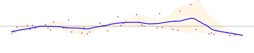 | Schagen at 208, -12.6% change |  |
| Dongen at 62, -2.7% change | 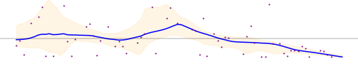 | Scherpenzeel at 75, -44.0% change |  |
| Dordrecht at 0, -100.0% change |  | Schiedam at 61, -74.5% change | |
| Drechterland at 59, -24.6% change |  | Schiermonnikoog at 599, -76.7% change |  |
| Drimmelen at 247, 0.4% change |  | Schouwen-Duiveland at 1892, 44.0% change | |
| Dronten at 466, -25.4% change |  | Simpelveld at 102, -67.4% change | 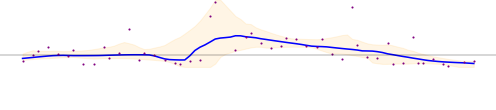 |
| Druten at 187, -18.8% change |  | Sint-Michielsgestel at 115, -13.6% change |  |
| Duiven at 53, -32.6% change | 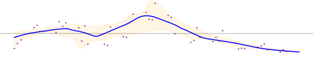 | Sittard-Geleen at 9, -90.5% change |  |
| Echt-Susteren at 59, -17.4% change |  | Sliedrecht at 334, -27.5% change | |
| Edam-Volendam at 270, -33.5% change |  | Sluis at 1963, -0.2% change | 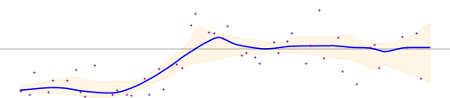 |
| Ede at 102, -50.8% change | | Smallingerland at 87, 17.7% change | 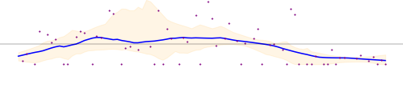 |
| Eemnes at 6, -95.8% change |  | Soest at 4, -98.7% change | |
| Eemsdelta at 56, -85.7% change |  | Someren at 45, -36.9% change | 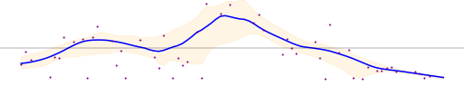 |
| Eersel at 7, -66.7% change | 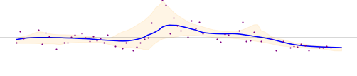 | Son en Breugel at 6, -42.4% change | |
| Eijsden-Margraten at 106, 4.4% change | 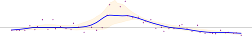 | Stadskanaal at 272, -7.9% change |  |
| Eindhoven at 128, -45.4% change | | Staphorst at 71, 12.9% change | |
| Elburg at 341, -8.8% change | 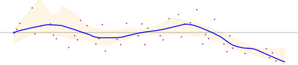 | Stede Broec at 64, -24.2% change |  |
| Emmen at 400, 14.0% change |  | Steenbergen at 3, -98.8% change |  |
| Enkhuizen at 55, -24.1% change | | Steenwijkerland at 258, 8.7% change | 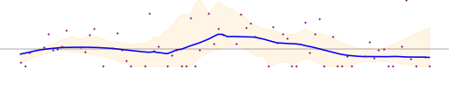 |
| Enschede at 327, -42.9% change |  | Stein at 377, 32.9% change | 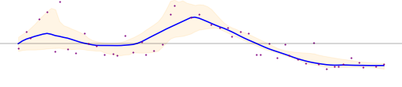 |
| Epe at 246, -29.5% change |  | Stichtse Vecht at 190, -32.7% change |  |
| Ermelo at 193, -35.3% change |  | Súdwest-Fryslân at 199, -56.5% change | 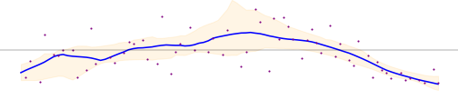 |
| Etten-Leur at 31, -46.2% change | | Terneuzen at 145, -28.9% change |  |
| Geertruidenberg at 76, -39.8% change | | Terschelling at 1325, -30.6% change |  |
| Geldrop-Mierlo at 9, -42.8% change | | Texel at 924, -1.1% change |  |
| Gemert-Bakel at 5, -77.5% change |  | Teylingen at 55, -29.0% change |  |
| Gennep at 174, -52.4% change |  | Tholen at 426, -27.6% change |  |
| Gilze en Rijen at 91, -2.7% change |  | Tiel at 484, -30.4% change |  |
| Goeree-Overflakkee at 727, -21.4% change |  | Tilburg at 0, -100.0% change |  |
| Goes at 219, -32.7% change | | Tubbergen at 29, -73.6% change |  |
| Goirle at 260, 76.5% change |  | Twenterand at 151, -36.4% change |  |
| Gooise Meren at 131, -55.5% change | | Tynaarlo at 61, -51.4% change |  |
| Gorinchem at 247, -32.9% change | | Tytsjerksteradiel at 2, -97.2% change |  |
| Gouda at 542, -13.6% change |  | Uitgeest at 40, -7.1% change |  |
| Groningen at 100, -66.3% change |  | Uithoorn at 1035, 5.2% change |  |
| Gulpen-Wittem at 57, -37.9% change |  | Urk at 35, -63.8% change |  |
| Hattem at 185, -55.4% change |  | Utrecht at 17, -94.4% change |  |
| Haaksbergen at 507, -31.2% change | | Utrechtse Heuvelrug at 39, -87.6% change |  |
| Haarlem at 687, 4.3% change | 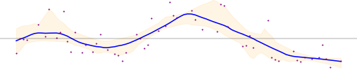 | Vaals at 145, -30.3% change | |
| Haarlemmermeer at 13, -94.4% change | | Valkenburg aan de Geul at 91, 30.1% change |  |
| Halderberge at 0, -100.0% change |  | Valkenswaard at 17, -45.8% change |  |
| Hardenberg at 165, -43.5% change | | Veendam at 348, -9.8% change |  |
| Harderwijk at 206, -33.0% change |  | Veenendaal at 145, -47.0% change | |
| Hardinxveld-Giessendam at 161, -24.9% change | | Veere at 149, 1.7% change |  |
| Harlingen at 144, -62.7% change |  | Veldhoven at 25, -45.0% change |  |
| Heemskerk at 116, -7.7% change |  | Velsen at 381, -36.7% change | |
| Heemstede at 1955, -0.0% change |  | Venlo at 50, -66.1% change | |
| Heerde at 142, -13.4% change | | Venray at 85, -46.3% change |  |
| Heerenveen at 220, -7.3% change |  | Vijfheerenlanden at 57, -79.5% change |  |
| Heerlen at 38, -45.8% change |  | Vlaardingen at 173, -49.4% change | |
| Heeze-Leende at 5, -27.8% change | | Vlieland at 980, -11.5% change |  |
| Heiloo at 451, 0.7% change | | Vlissingen at 301, 2.0% change | |
| Hellendoorn at 60, -74.9% change | | Voerendaal at 8, -46.2% change | |
| Hellevoetsluis at 380, -28.2% change |  | Voorschoten at 133, -23.3% change |  |
| Helmond at 19, -57.9% change |  | Voorst at 99, -53.9% change | |
| Hendrik-Ido-Ambacht at 92, -45.0% change | | Vught at 53, 14.8% change |  |
| Hengelo at 535, -19.5% change | | Waterland at 165, 5.4% change |  |
| Het Hogeland at 508, -39.7% change |  | Waadhoeke at 82, -66.4% change |  |
| Heumen at 0, -100.0% change | | Waalre at 10, -45.6% change |  |
| Heusden at 88, -43.1% change | | Waalwijk at 52, -78.9% change | |
| Hillegom at 159, -4.3% change | | Waddinxveen at 96, -58.1% change |  |
| Hilvarenbeek at 48, -17.1% change |  | Wageningen at 198, 2.7% change | |
| Hilversum at 495, -12.2% change |  | Wassenaar at 3, -85.4% change |  |
| Hoeksche Waard at 572, -15.1% change |  | Weert at 132, -57.6% change | |
| Hof van Twente at 54, -81.5% change |  | Weesp at 334, -44.7% change | |
| Hollands Kroon at 113, -57.6% change |  | West Betuwe at 506, -7.9% change | |
| Hoogeveen at 590, 16.0% change | | West Maas en Waal at 466, -29.6% change | |
| Hoorn at 216, -25.1% change | | Westerkwartier at 369, -52.2% change | |
| Horst aan de Maas at 13, -74.5% change |  | Westerveld at 0, -100.0% change |  |
| Houten at 217, -23.8% change | | Westervoort at 32, -32.4% change |  |
| Huizen at 1181, 23.7% change |  | Westerwolde at 429, -32.5% change |  |
| Hulst at 221, -39.4% change |  | Westland at 0, -100.0% change |  |
| IJsselstein at 162, -42.1% change | | Weststellingwerf at 154, -19.2% change |  |
| Katwijk at 305, 65.4% change |  | Westvoorne at 0, -100.0% change |  |
| Kaag en Braassem at 121, -44.3% change | | Wierden at 0, -100.0% change | |
| Kampen at 135, -53.2% change |  | Wijchen at 90, -48.7% change |  |
| Kapelle at 72, -32.7% change |  | Wijdemeren at 29, -73.4% change |  |
| Kerkrade at 133, -52.4% change |  | Wijk bij Duurstede at 731, -14.0% change |  |
| Koggenland at 97, -39.2% change |  | Winterswijk at 15, -96.3% change |  |
| Krimpen aan den IJssel at 450, -27.5% change |  | Woensdrecht at 280, -48.1% change | |
| Krimpenerwaard at 362, -46.1% change | | Woerden at 2870, 65.6% change | |
| Laarbeek at 5, -57.4% change |  | Wormerland at 8, -34.5% change |  |
| Landgraaf at 45, -62.0% change | | Woudenberg at 97, -45.8% change |  |
| Landsmeer at 3, -91.6% change |  | Zaanstad at 241, -25.0% change | |
| Lansingerland at 58, -25.1% change | | Zaltbommel at 0, -100.0% change | |
| Laren at 259, -36.5% change |  | Zandvoort at 114, 4.8% change |  |
| Leeuwarden at 134, -42.4% change | | Zeewolde at 121, -34.2% change |  |
| Leiden at 214, -31.2% change |  | Zeist at 25, -85.6% change | |
| Leiderdorp at 97, -54.0% change |  | Zevenaar at 6, -92.4% change |  |
| Leidschendam-Voorburg at 10, -82.7% change |  | Zoetermeer at 6, -93.1% change |  |
| Lelystad at 450, -44.6% change |  | Zoeterwoude at 45, -23.2% change |  |
| Leudal at 131, -0.9% change |  | Zuidplas at 286, 15.3% change | |
| Leusden at 29, -32.2% change |  | Zundert at 16, -45.9% change | |
| Lingewaard at 159, -36.7% change |  | Zutphen at 5, -97.7% change |  |
| Lisse at 409, -4.1% change |  | Zwartewaterland at 209, -72.3% change | |
| Lochem at 8, -93.4% change |  | Zwijndrecht at 62, -51.2% change | |
| Loon op Zand at 315, 47.8% change |  | Zwolle at 223, -56.1% change |  |